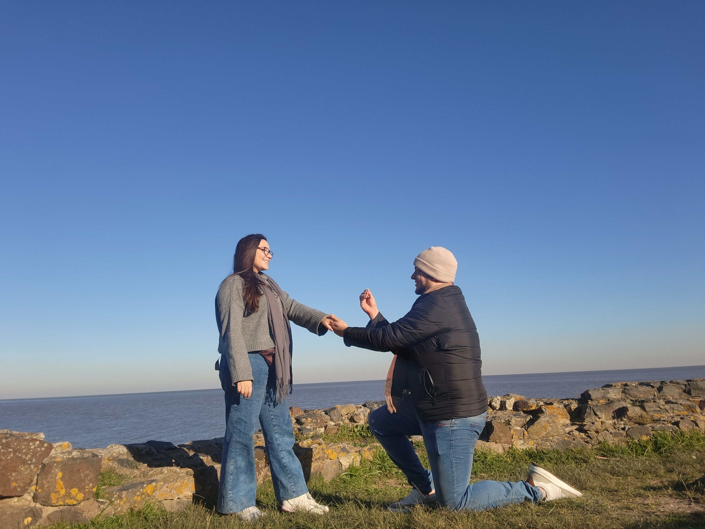
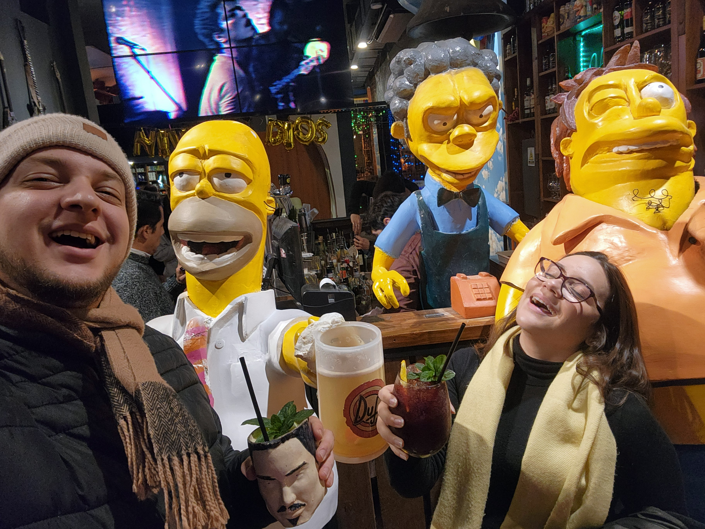
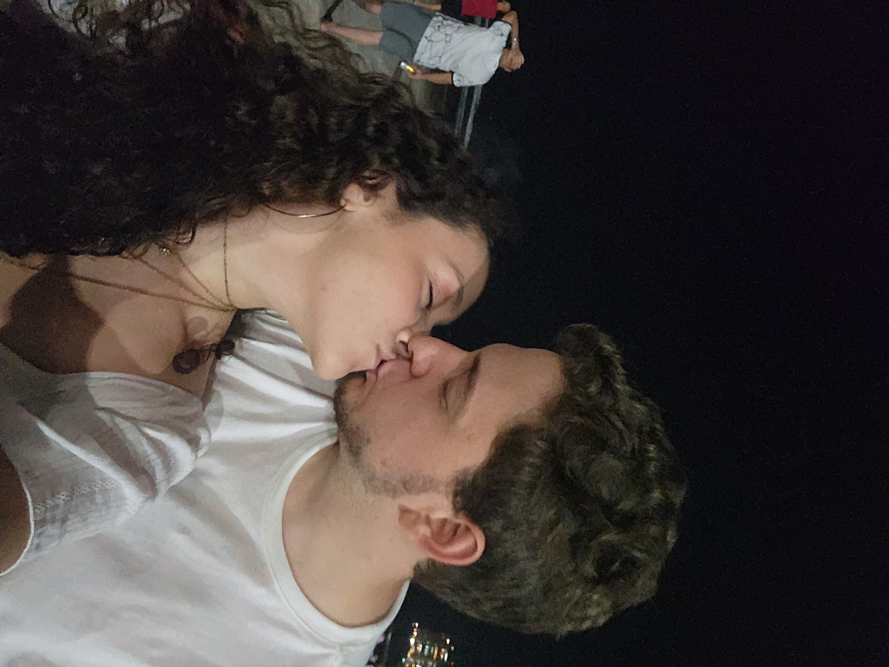
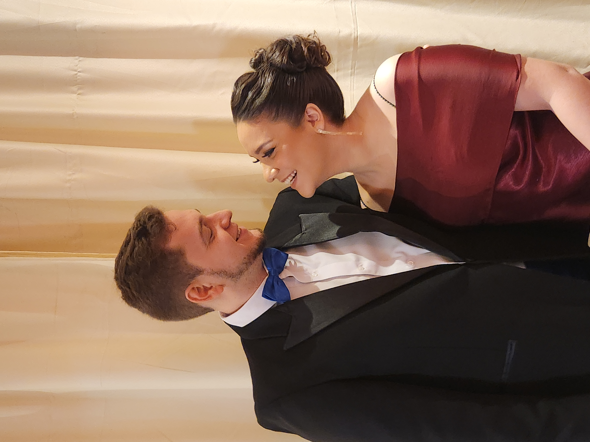

Na primeira carona
4 anos antes de
darmos início à nossa trajetória.
Eu ainda não sabia, mas naquele dia conhecia a mulher da minha vida.
Para o amor da minha vida
Um pedacinho da nossa história, feito para lembrar que os melhores dias ainda estão por vir.
Abrir nossa história ↓Entre tantos caminhos possíveis, a vida escolheu cruzar os nossos. E, desde então, cada detalhe ganhou uma nova cor: as caronas planejadas por você, as viagens sem roteiro cheias de perrengues e até os dias comuns.
Este site é uma pequena cápsula do tempo. Um lembrete de tudo o que já vivemos e uma promessa silenciosa sobre tudo que ainda vamos construir.
Amar você é a minha parte favorita de todos os dias.
”Na primeira carona
Eu ainda não sabia, mas naquele dia conhecia a mulher da minha vida.
Depois da pandemia
Por meio de muitas interseções de amigos, tivemos a alegria de nos reencontrar, e dessa vez para dar início ao resto de nossas vidas juntos.
O nosso casamento
De mãos dadas, a gente vai mais longe. E vai junto sempre.
Essas são algumas das minhas lembranças favoritas ao seu lado, cada momento foi uma jornada única.




Meu amor,
Se eu pudesse guardar uma única coisa para levar comigo em todos os futuros, seria a sensação de encontrar você. Seu abraço é meu lugar favorito, e seu jeito de ver o mundo me ensina a enxergar beleza até nos dias difíceis.
Eu escolho você nas grandes celebrações e nas manhãs preguiçosas. Escolho as nossas conversas, os nossos planos e até as nossas bagunças. Escolho fazer da vida uma aventura ao seu lado.
Que a gente continue rindo alto, viajando longe e voltando sempre um para o outro.
Para sempre seu,
Iago.